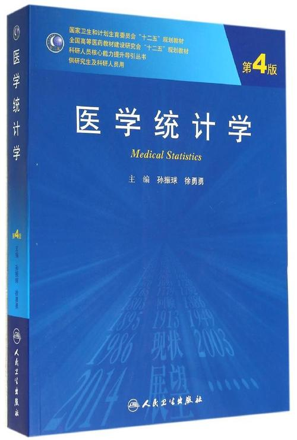

简介与传送门
日期: 2020-11-10 作者：wxhyihuan
1.1 简介
这份笔记主要是我个人在学习孙振球，徐勇勇老师的<<医学统计学>> 第4版的过程中，尽量使用编程语言R对书中的示例进行实现的记录， 并用Bookdown形成的。
<<医学统计学>> 孙振球, 徐勇勇. 第4版[M]. 人民卫生出版社, 2014.
 虽然在学习，整理过程中尽量将笔记的形式，内容结构进行力所能及的梳理，这里要特别感谢在学习过程中，在网络上找到的一些参考资料带来的帮助，然后将一些 示例与原书进行对照，以避免一些学习错误，但个人能力和精力实在有限，也容易会有理解不当，表述错误的情况， 如果您在参考的过程中，发现了这样的错误，请您尽量可以告诉我，我会确认并努力修正，如果您对文档有疑问或建议，都可以 邮件 告知我。
建议您购买原版教材结合本笔记学习，您也可以在网络上找到电子书方便参考。
形成此文档对我来讲是一个很大的挑战，需要耗费巨大精力。另外，因为本人特殊情况，难以像以前正常工作，所以也是以此方式 保持学习能力，和提升自己。希望这份文档能对您有所助益，如果正是如此，您愿意的话可以捐助我，这里先谢过鼓励和支持的朋友~
1.1.1 软件准备
本文档使用到的主要软件 R版本是4.0.3, 和 RStudio，版本是 1.3.1093 .
如果您R语言的新手，您可以在下面找到一些快速上手的学习资料：
sessionInfo()
## R version 4.0.3 (2020-10-10)
## Platform: x86_64-w64-mingw32/x64 (64-bit)
## Running under: Windows 10 x64 (build 19041)
## Matrix products: default
## locale:
## [1] LC_COLLATE=Chinese (Simplified)_China.936
## [2] LC_CTYPE=Chinese (Simplified)_China.936
## [3] LC_MONETARY=Chinese (Simplified)_China.936
## [4] LC_NUMERIC=C
## [5] LC_TIME=Chinese (Simplified)_China.936
## attached base packages:
## [1] stats graphics grDevices utils datasets methods base
## loaded via a namespace (and not attached):
## [1] compiler_4.0.3 bookdown_0.21 htmltools_0.5.0 tools_4.0.3
## [5] yaml_2.2.1 tinytex_0.27 rmarkdown_2.5 knitr_1.30
## [9] digest_0.6.27 xfun_0.19 rlang_0.4.8 evaluate_0.14 1.2 传送门
如果您希望快速找到R处理数据的方法，可以通过下面几张插图里面的传送门进行传送。注意的是，似乎Rmarkdown里面对 SVG插图中包含链接展示无法支持，所以你可以
- “右击”插图，选择在 “新标签页打开图片”，然后新标页签打开的图片。这样可以找到图片中包含的超链接，快速找到合适的章节内容。
- “右击”插图，选择在 “图片另存为”，这样包含的超链接图片保存下来，可以在需要的时候快速找到合适的章节内容。
Figure 1.1: 完全随机设计的统计方法选择思路(目前, 传送门还不完整，在随书更新ing)
1.3 致谢
谨以此书献给我的家人，想在此感谢母亲和父亲，纪念祝愿我的姐姐及她的两个丫头。
最后，祝愿到此一游的你我他！￣▽￣
1.4 声明
本笔记可供选修《医学统计学》课程的同学学习使用，如果您需要将素材和代码作其它用途，请联系作者:wxh244295043@gmail.com。